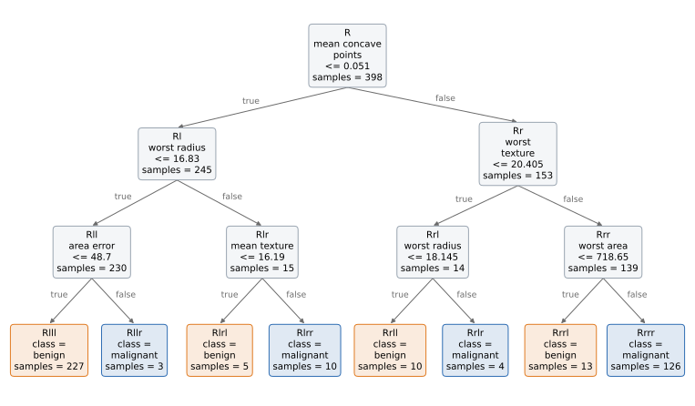
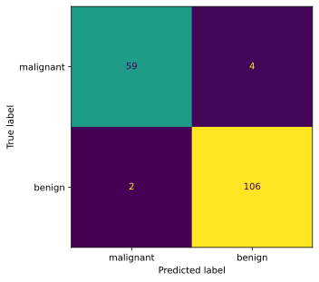

RuleTree for classification#
Initialize the RuleTreeClassifier and train it on your dataset#
from RuleTree import RuleTreeClassifier
from RuleTree.stumps.classification import DecisionTreeStumpClassifier
from sklearn.metrics import accuracy_score
from sklearn.datasets import load_breast_cancer
from sklearn.model_selection import train_test_split
# Load the breast cancer dataset
data = load_breast_cancer()
X = data.data # Features
y = data.target # Target labels
feature_names = data.feature_names
# Split the data into training and testing sets
X_train, X_test, y_train, y_test = train_test_split(X, y, test_size=0.3, random_state=42)
# Initialize the RuleTreeClassifier
# The `prune_useless_leaves` parameter allows pruning of leaves with the same prediction outcome.
# The split criterion is a parameter of the stumps used to split the nodes.
rtc = RuleTreeClassifier(
max_depth=3,
prune_useless_leaves=True,
random_state=42,
base_stumps=DecisionTreeStumpClassifier(criterion='gini'),
)
# Fit the RuleTreeClassifier to the training data
rtc.fit(X_train, y_train)
# Extract the rules as a dictionary using feature names
rules = rtc.get_rules(columns_names=feature_names)
# Print textual rules of trained tree
rtc.print_rules(rules)
|--- mean concave points <= 0.051
| |--- worst radius <= 16.83
| | |--- area error <= 48.7
| | | output: 1
| | |--- area error > 48.7
| | | output: 0
| |--- worst radius > 16.83
| | |--- mean texture <= 16.19
| | | output: 1
| | |--- mean texture > 16.19
| | | output: 0
|--- mean concave points > 0.051
| |--- worst texture <= 20.405
| | |--- worst radius <= 18.145
| | | output: 1
| | |--- worst radius > 18.145
| | | output: 0
| |--- worst texture > 20.405
| | |--- worst area <= 718.65
| | | output: 1
| | |--- worst area > 718.65
| | | output: 0
Drawing the tree#
plot_tree draws the tree with matplotlib: each internal node shows its rule and its number of
training instances, each leaf its prediction. The arrow “true” leads to the child that gets the
instances for which the rule is true.
import matplotlib.pyplot as plt
# wrap: at most 12 characters per line, for the long names of the features
rtc.plot_tree(columns_names=feature_names, class_names=list(data.target_names), wrap=12)
plt.show()

y_pred = rtc.predict(X_test)
print('Prediction results\n', y_pred[0:10])
Prediction results
[1 0 0 1 1 0 0 0 1 1]
y_pred_probas = rtc.predict_proba(X_test)
print('Prediction probabilities results\n', y_pred_probas[0:10])
Prediction probabilities results
[[0.01321586 0.98678414]
[1. 0. ]
[1. 0. ]
[0.01321586 0.98678414]
[0.01321586 0.98678414]
[1. 0. ]
[1. 0. ]
[1. 0. ]
[0.46153846 0.53846154]
[0.01321586 0.98678414]]
print('Accuracy result\n', accuracy_score(y_test, y_pred))
Accuracy result
0.9649122807017544
Confusion matrix#
How the test instances of each class are predicted.
from sklearn.metrics import ConfusionMatrixDisplay
ConfusionMatrixDisplay.from_predictions(y_test, y_pred, display_labels=data.target_names, colorbar=False)
plt.show()

# Get local feature importances similar to https://github.com/andosa/treeinterpreter implementation
# Prediction is the sum of bias and feature contributions
prediction, bias, contributions = rtc.local_interpretation(X_test, joint_contribution=True)
print('First instance analysis')
print(f'Prediction: {prediction[0]}')
print(f'Bias: {bias[0]}')
print(f'Contributions: {contributions[0]}')
First instance analysis
Prediction: [0.01321586 0.98678414]
Bias: [0.37437186 0.62562814]
Contributions: {(7,): array([-0.32131063, 0.32131063]), (7, 20): array([-0.03132209, 0.03132209]), (7, 13, 20): array([-0.00852327, 0.00852327])}